Progressive Purpose
A case study on the design process used to create a dynamic web experience for Progressive's purpose statement and the stories that support it.
ROLES / Site mapping, prototyping, building tokens and components within Figma, partnering with developers
IMPACT / Successfully designed and launched a site extension by creating a scalable UI kit and collaborating closely with developers to ensure seamless translation from design to code
01 / Brief
Progressive has had an incredible history of helping people, but had yet to compile all the great stories into one single destination. The goal of the Purpose site is to create a unique experience to share all these stories through captivating imagery, video and written text. The experience needed to be housed on the main Progressive brand website, but present itself with a distinctive visual identity that stands out on its own.
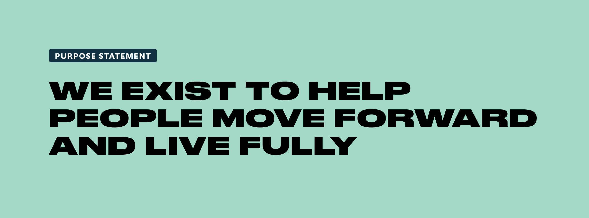
02 / Site Map
Many new pages needed to be created to house the various content on the existing website. Some of these pages included the homepage, campaign pages, program pages and stories. Most of these designs would serve as templates for repeated content.
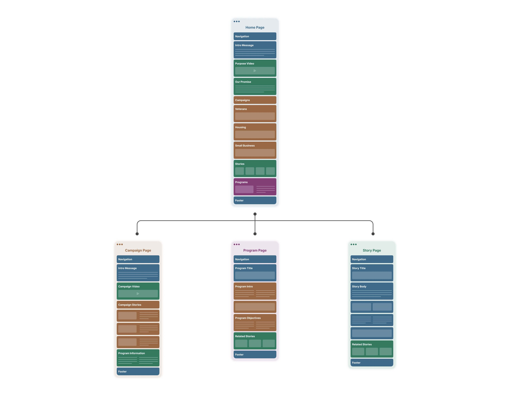
03 / Iteration
Since the Purpose site was being built into an existing platform, content modules within the prototypes needed to be derived from what already existed in the pattern library, but would later be modified to meet the needs of the Purpose brand. Early iterations followed existing module patterns and wireframing was bypassed because of this.
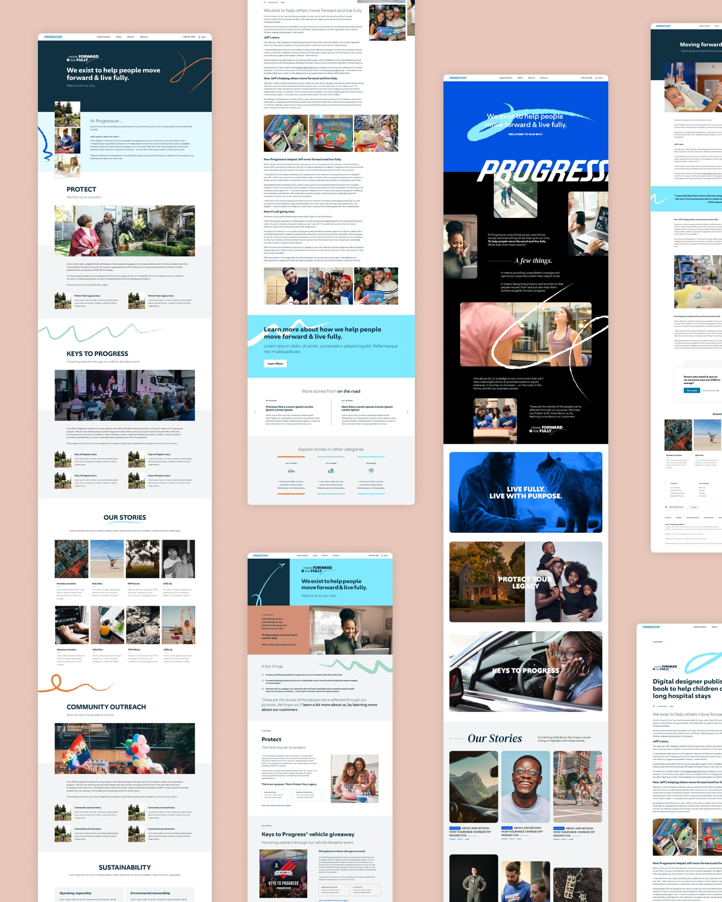
04 / Visual Identity
To drive the identity of the site, a set of guiding principles were defined prior to design. These guiding principles were: show authentic humanity, be unapologetically bold, convey powerful expression, move from transactional to engaging, and use copy to convey action. These principles became the backbone to all design, photography and written language within the experience.
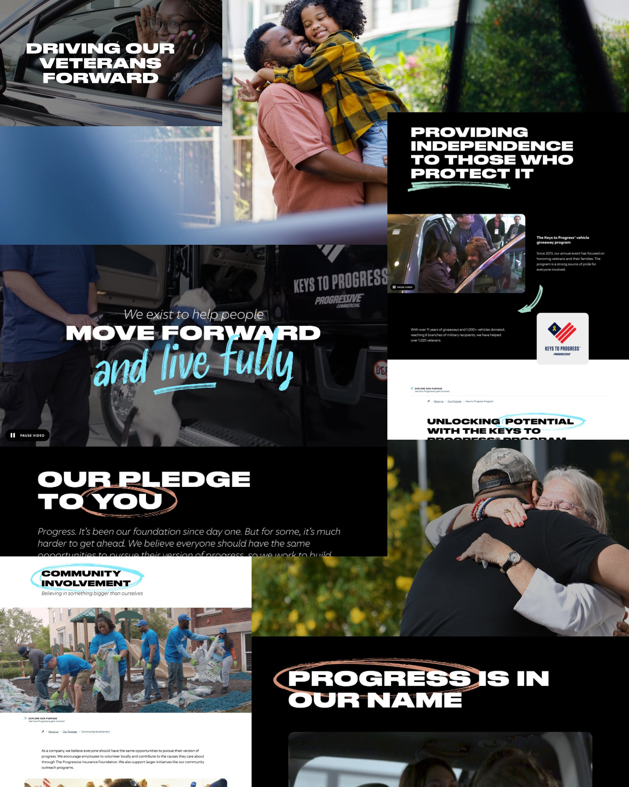
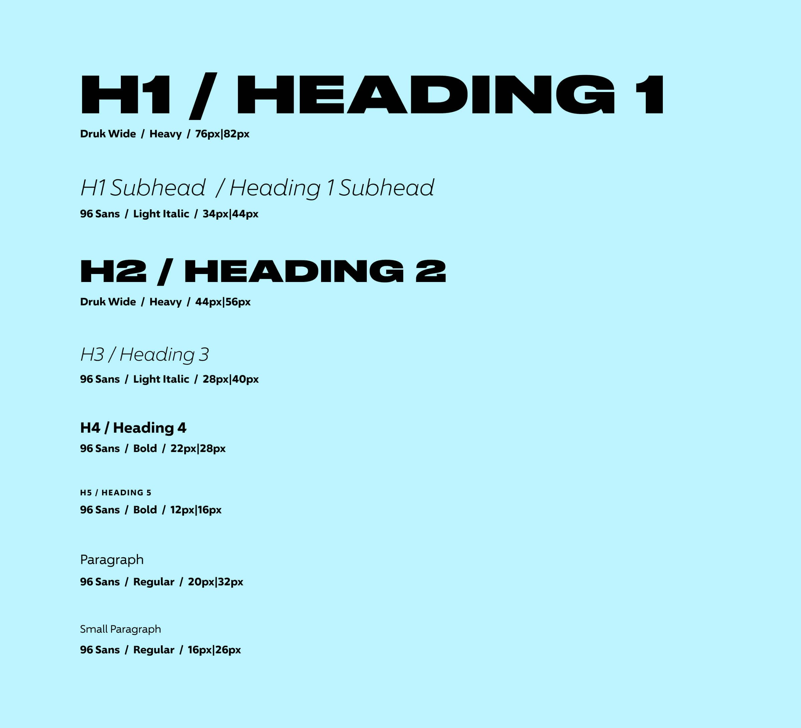
Black full bleed modules and a bold and expanded all-caps font as well as candid in-action photography were used to convey these principles and stand out from the rest of the pages on the site.
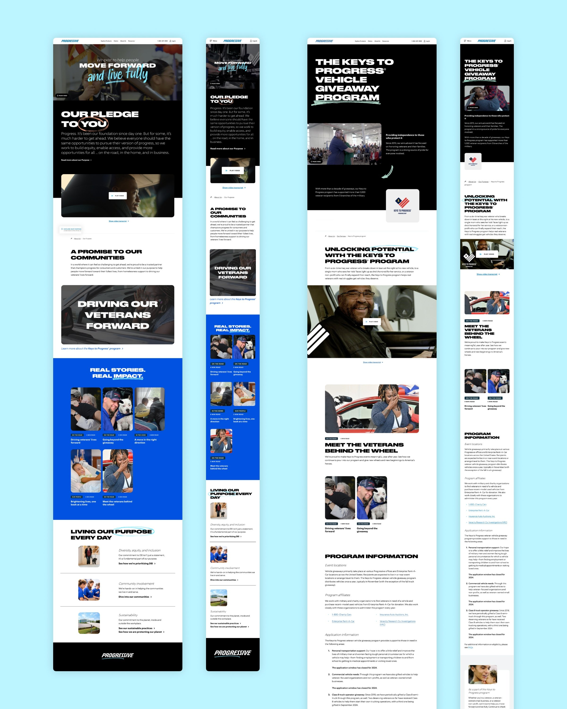
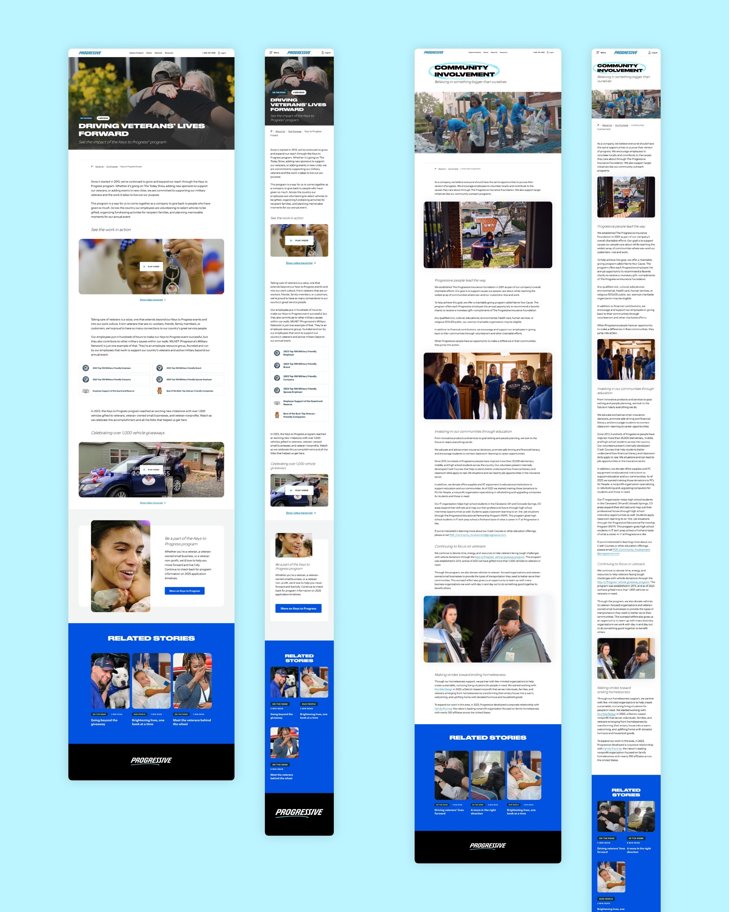
05 / UI Kit
I was tasked with creating a UI kit in Figma to enforce consistency among the components being used in the prototype, which showed the relationships between mobile and desktop components as well as component variants. This also became the source for developers to base their code.
Article Tiles
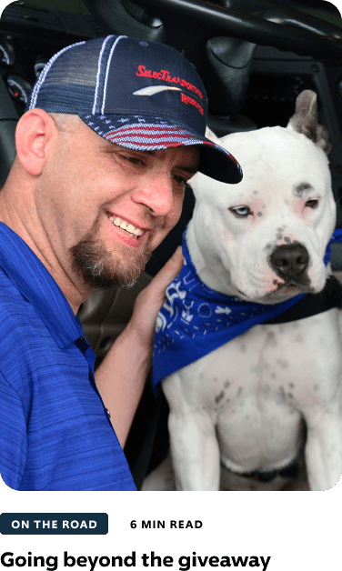
Call to Action
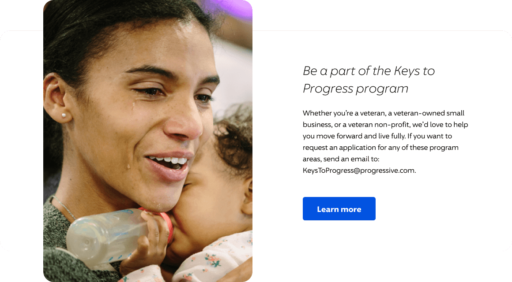
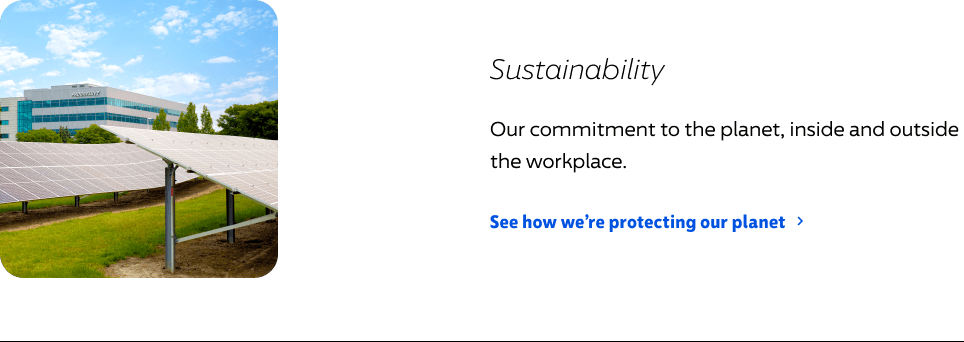
Content Modules
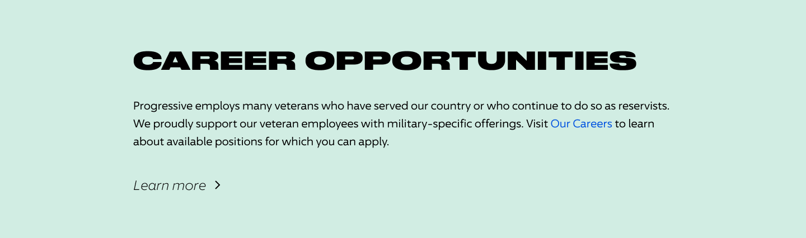
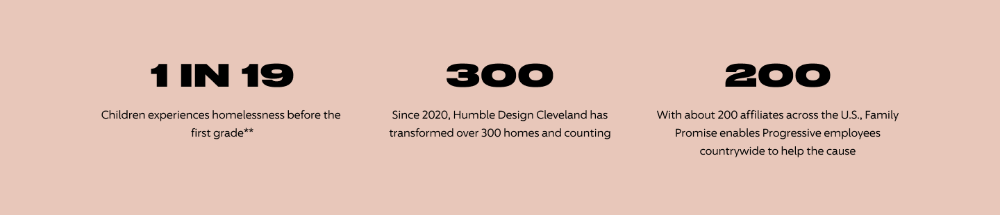
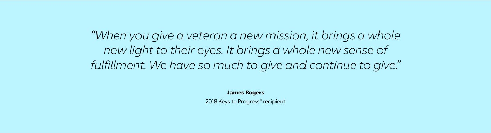
Article Header
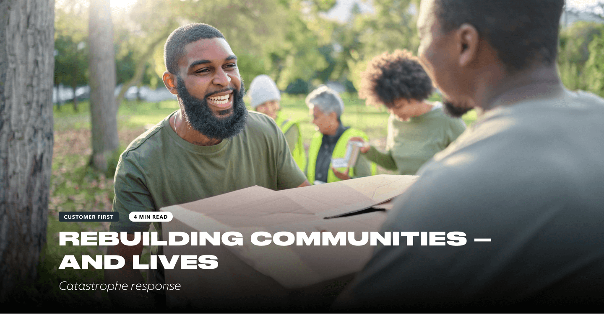
Campaign Tiles
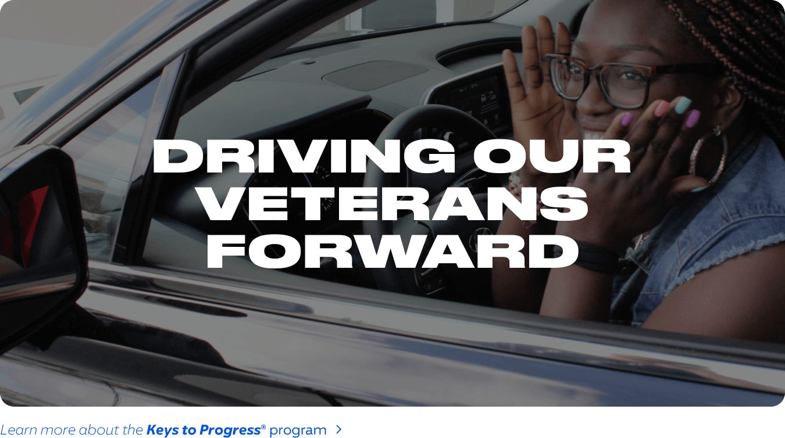